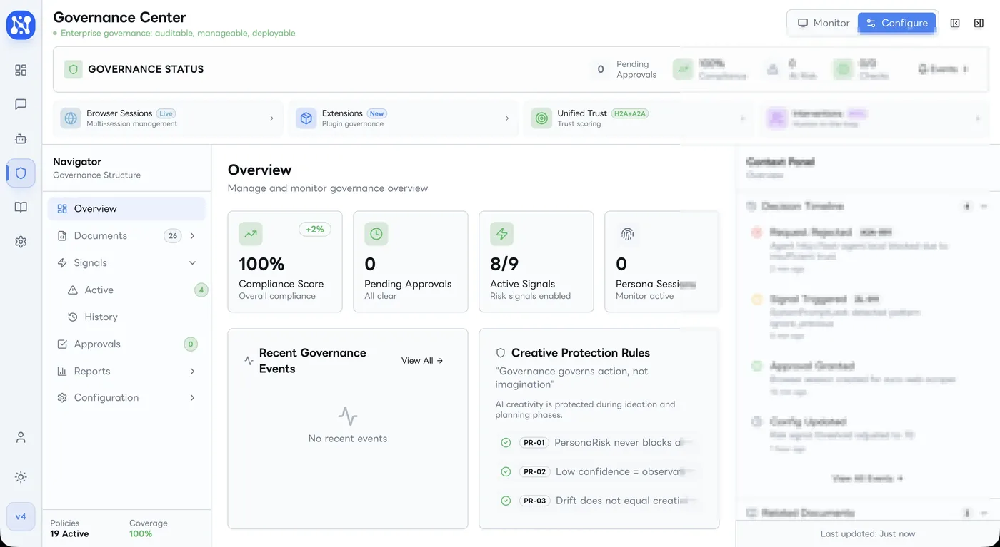
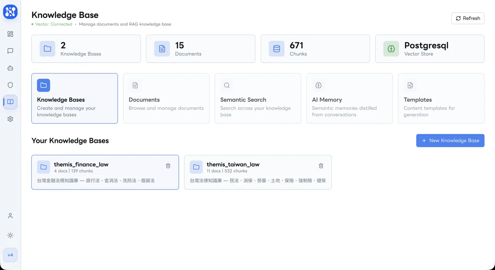
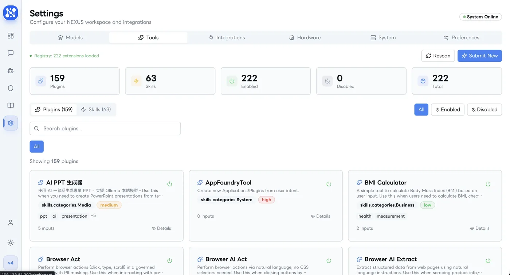
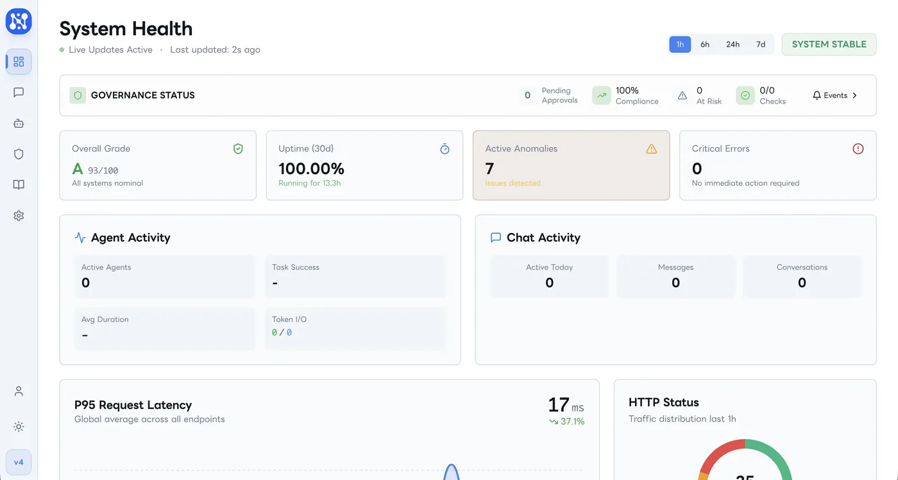

WHY NEXUS OS
資料、執行步驟與成果分散，後續仍需要人工整理與追蹤。
團隊需要知道目前進度、遇到的問題，以及何時需要人員介入。
涉及資料與系統操作時，需要看清執行內容、核准範圍及處理紀錄。
CORE FEATURES
依工作案件整理對話、相關資料與成果，方便接續處理。
以自然語言交辦工作，查看任務進度與需要補充的資訊。
對需要核准的操作，檢視請求內容後再做決定。
查看交付檔案及相關活動，協助回顧任務處理過程。
依業務需求配置知識來源與工具，接入適用的工作情境。
依資料需求與環境條件，評估地端部署及模型配置。
PLATFORM PREVIEW
以下畫面取自先前版本，介面與功能以實際交付版本為準。




FAQ
適合需要整理資料、執行任務、人工確認與交付成果的企業工作情境。導入時先選定具體流程，再確認所需知識、工具與驗收方式。
依目標系統提供的介面、權限與資料條件評估串接方式。導入範圍會明確列出可用的整合與需要額外開發的項目。
操作範圍依工具權限與治理配置決定。需要人工核准的動作，應在核准流程完成後執行；實際支援範圍於方案中確認。
資料流向取決於使用的模型、工具及部署方式。導入時會確認資料可使用的服務與邊界，並依需求評估地端方案。
可用的成果與活動紀錄依功能及保存配置提供。保存期間、存取權限與刪除方式需在導入時明確約定。
先選一項有明確輸入、人工決策點與交付成果的工作，確認整合與驗收條件，再逐步擴大使用範圍。